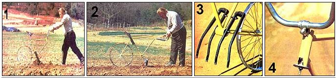

MOTHER EARTH NEWS STAFF
[1] Dennis's recycled cycle makes a terrific cultivator, and [2] a row marker, as well. [3] The bicycle-fork tines are fastened to the lower part of the frame with threaded rods. [4] Notche's cut into the head tube provide a socket for the handlebar clamp.